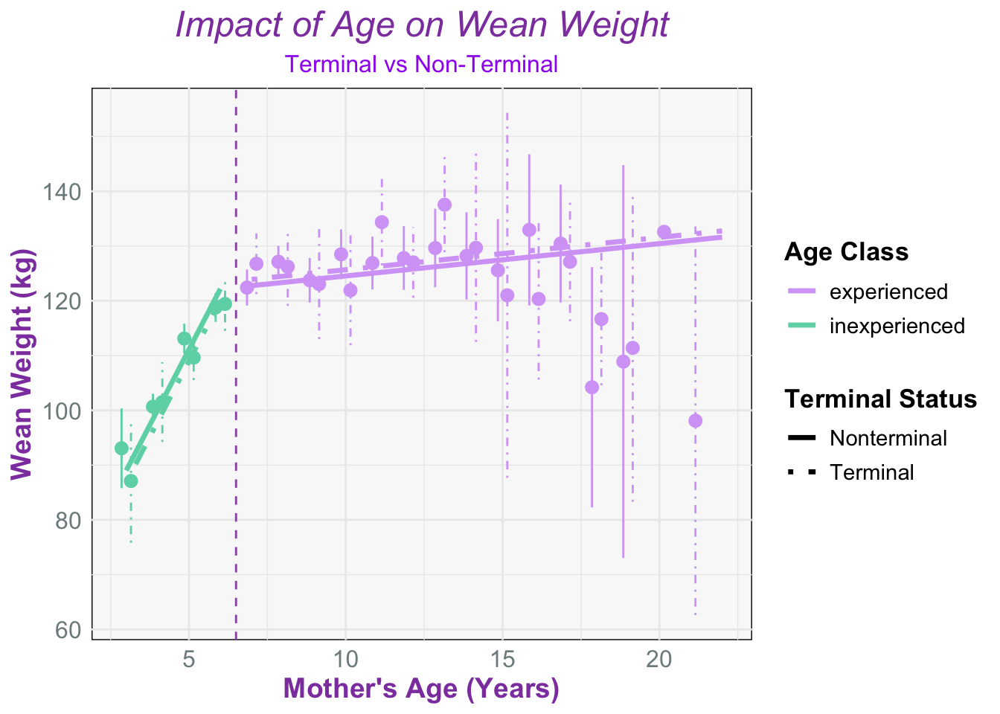
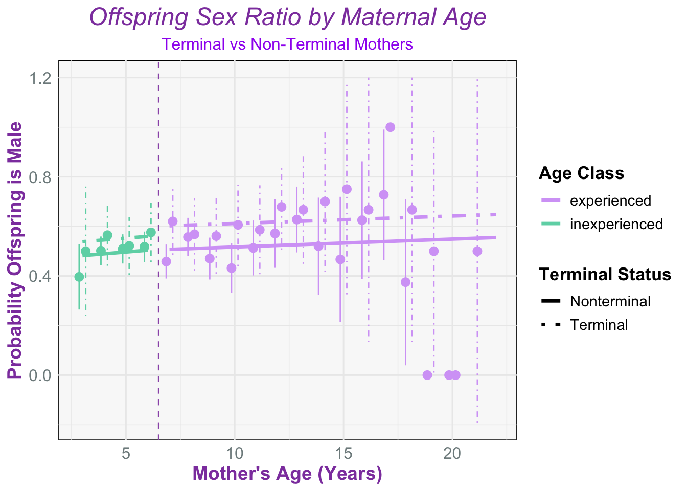

Studying Terminal Effects in Northern Elephant Seals
#Introduction
#Downloading the Data
#Modified data:
#Adult female population fig:
#Lactation Duration data set
In some species terminal investment shows only in early years of reproduction, or during prime ages for breeding but often not in older ages due to senescence
New Idea:
We want to create a threshold that has a prime age threshold in the figure. Ideally, it should show chronological age on the x axis and lactation duration on the y axis.
However, since we only were interested in looking at the last years of life to examine terminal investment we FILTERED out animals as bio_age > 0. We still looked at chronological age to see how lactation duration changes in the last years of life among different age classes. We potentially will define animals as YOUNG OR OLD also to make it binomial.
POST MAX:
We will have :
L be lactation duration
A = chronological age
T = terminal (0 or 1 to create a yes no situation)
C = age category (young or old) we define young as ages 3-7 and old as 8+
In order to graph this we will look at L ~ Gamma(mean, sd)… mean = overall mean +coefficient for chronological age
Generalized linear mixed model fit by maximum likelihood (Laplace
Approximation) [glmerMod]
Family: Negative Binomial(7.9829) ( log )
Formula: lactation_duration ~ age10 + age10:ageclass + terminal:ageclass +
(1 | year)
Data: lact_dat
AIC BIC logLik deviance df.resid
36602.9 36648.3 -18294.4 36588.9 4871
Scaled residuals:
Min 1Q Median 3Q Max
-2.3995 -0.3190 0.1894 0.5302 3.7307
Random effects:
Groups Name Variance Std.Dev.
year (Intercept) 0.02596 0.1611
Number of obs: 4878, groups: year, 54
Fixed effects:
Estimate Std. Error z value Pr(>|z|)
(Intercept) 3.196432 0.025535 125.180 < 2e-16 ***
age10 0.034629 0.026204 1.322 0.186
age10:ageclassinexperienced 0.005186 0.089032 0.058 0.954
ageclassexperienced:terminal -0.109052 0.019899 -5.480 4.24e-08 ***
ageclassinexperienced:terminal -0.092747 0.019265 -4.814 1.48e-06 ***
---
Signif. codes: 0 '***' 0.001 '**' 0.01 '*' 0.05 '.' 0.1 ' ' 1
Correlation of Fixed Effects:
(Intr) age10 ag10:g agclssx:
age10 -0.252
ag10:gclssn 0.317 -0.614
agclssxprn: -0.090 -0.228 -0.050
agclssnxpr: -0.105 0.134 0.046 0.102
Linear mixed model fit by REML. t-tests use Satterthwaite's method [
lmerModLmerTest]
Formula: Wt ~ age10 + age10:ageclass + terminal:ageclass + (1 | year) +
(1 | animalID)
Data: wt_dat
REML criterion at convergence: 13704.5
Scaled residuals:
Min 1Q Median 3Q Max
-5.8214 -0.4607 0.0286 0.5082 4.6978
Random effects:
Groups Name Variance Std.Dev.
animalID (Intercept) 95.44 9.769
year (Intercept) 52.67 7.257
Residual 230.00 15.166
Number of obs: 1595, groups: animalID, 779; year, 42
Fixed effects:
Estimate Std. Error df t value Pr(>|t|)
(Intercept) 122.173 1.465 47.188 83.390 < 2e-16
age10 5.900 2.031 1565.862 2.905 0.00372
age10:ageclassinexperienced 104.626 6.697 1521.741 15.622 < 2e-16
ageclassexperienced:terminal 1.138 1.547 1483.894 0.736 0.46197
ageclassinexperienced:terminal -2.123 1.601 1515.312 -1.327 0.18485
(Intercept) ***
age10 **
age10:ageclassinexperienced ***
ageclassexperienced:terminal
ageclassinexperienced:terminal
---
Signif. codes: 0 '***' 0.001 '**' 0.01 '*' 0.05 '.' 0.1 ' ' 1
Correlation of Fixed Effects:
(Intr) age10 ag10:g agclssx:
age10 -0.285
ag10:gclssn 0.386 -0.606
agclssxprn: -0.074 -0.297 0.020
agclssnxpr: -0.153 0.122 -0.001 0.032

#Wean Weight 2:
Were going to attempt trying to create a new wean weight dataset to incorporate three breakpoints:
#Sex Ratios fig:
We hypothesize that young terminal moms will have a higher chance of giving birth to a male offspring sex ratio than non terminal moms. Whereas old terminal moms will produce less males compared to non terminal moms
Generalized linear mixed model fit by maximum likelihood (Laplace
Approximation) [glmerMod]
Family: binomial ( logit )
Formula: is_male ~ age10 + age10:ageclass + terminal:ageclass + (1 | year_fct)
Data: sex_dat
AIC BIC logLik deviance df.resid
3053.7 3087.9 -1520.8 3041.7 2202
Scaled residuals:
Min 1Q Median 3Q Max
-1.4117 -1.0123 0.7786 0.9713 1.1167
Random effects:
Groups Name Variance Std.Dev.
year_fct (Intercept) 0.02627 0.1621
Number of obs: 2208, groups: year_fct, 47
Fixed effects:
Estimate Std. Error z value Pr(>|z|)
(Intercept) 0.01497 0.07956 0.188 0.85078
age10 0.12900 0.18759 0.688 0.49166
age10:ageclassinexperienced 0.16058 0.66737 0.241 0.80986
ageclassexperienced:terminal 0.38735 0.14318 2.705 0.00682 **
ageclassinexperienced:terminal 0.22486 0.15190 1.480 0.13879
---
Signif. codes: 0 '***' 0.001 '**' 0.01 '*' 0.05 '.' 0.1 ' ' 1
Correlation of Fixed Effects:
(Intr) age10 ag10:g agclssx:
age10 -0.598
ag10:gclssn 0.676 -0.619
agclssxprn: -0.176 -0.210 -0.039
agclssnxpr: -0.219 0.145 0.049 0.060

Now I’m just going to change it all to 3 classes to see how that changes things..
Ok.. now heres the BIG cool challenge I want to take on next..
Did offspring of terminal moms have higher chance of survival???
Source Code
---title: "Studying Terminal Effects in Northern Elephant Seals"format: html: echo: false fig-width: 7 fig-height: 5 code-fold: true code-tools: true warning: false toc: trueeditor: visual---#Introduction#Downloading the Data```{r}#| label: setup#Libraries: library(tidyverse)library(dplyr)library(ggplot2)library(lme4)library(cowplot)library(car)sealdat <-read_csv(here::here("data/Adrien Data Pull 2024_12_06.csv"))```#Modified data:```{r}# #practice# sealdat %>% filter(animalID == 170, observed == 1) %>% # mutate(age = year - yearborn, # max_age = max(age), # bio_age = max_age - age) %>% view()#Bioage cleanbioseal <- sealdat %>%filter(observed ==1, tagsex =="F") %>%group_by(animalID) %>%mutate(age = year - yearborn, max_age =max(age), bio_age = max_age - age, terminal =ifelse(bio_age ==0, 1, 0),firstobsbreed =as.Date(firstobsbreed, format ="%Y-%m-%d"), lastobsbreed =as.Date(lastobsbreed, format ="%Y-%m-%d"), lactation_duration =as.numeric(difftime(lastobsbreed, firstobsbreed, units ="days"))) %>%filter(age >2)```#Adult female population fig:```{r}#Create terminal to be a factor here pop_breed <- bioseal %>%group_by(age, terminal) %>%summarise(n =n(), .groups ="drop") %>%mutate(terminal_fct =factor(terminal, labels =c("Nonterminal", "Terminal")))#Figure with age distribution with terminal as a factor to create a stacked barplotpop_fig <-ggplot(pop_breed, aes(x =factor(age), y = n, fill = terminal_fct)) +geom_col() +labs(x ="Age",y ="Number of Individuals",fill ="Terminal Status",title ="# of Adult Females by Terminal Status" ) +theme_minimal(base_size =15) +theme(panel.grid.major =element_line(color ="pink", linewidth =0.3), panel.grid.minor =element_blank(), axis.title.x =element_text(color ="#8E44AD", size =14, face ="bold"), axis.title.y =element_text(color ="#8E44AD", size =14, face ="bold"),axis.text.x =element_text(color ="#7F8C8D", size =12), axis.text.y =element_text(color ="#7F8C8D", size =12),plot.title =element_text(hjust =0.5, size =18, face ="italic", color ="purple"), legend.title =element_text(size =12, face ="bold", color ="purple"),legend.text =element_text(size =12, color ="purple") ) +scale_fill_manual(values =c("Nonterminal"="#6DD5B3", "Terminal"="#D5A6F6"))print(pop_fig)```#Lactation Duration data set```{r}lact_dat <- bioseal %>%filter(lactation_duration >0) %>% dplyr::select(animalID, bio_age, lactation_duration, year)```In some species terminal investment shows only in early years of reproduction, or during prime ages for breeding but often not in older ages due to senescenceNew Idea:\We want to create a threshold that has a prime age threshold in the figure. Ideally, it should show chronological age on the x axis and lactation duration on the y axis.However, since we only were interested in looking at the last years of life to examine terminal investment we FILTERED out animals as bio_age \> 0. We still looked at chronological age to see how lactation duration changes in the last years of life among different age classes. We potentially will define animals as YOUNG OR OLD also to make it binomial.POST MAX:We will have :L be lactation durationA = chronological ageT = terminal (0 or 1 to create a yes no situation)C = age category (young or old) we define young as ages 3-7 and old as 8+In order to graph this we will look at L \~ Gamma(mean, sd)... mean = overall mean +coefficient for chronological age```{r}#First let's modify our data set for this graph maturity <-6lact_dat <- bioseal %>%filter(lactation_duration >0& lactation_duration <45) %>% dplyr::select(animalID, bio_age, lactation_duration, year, pupsex, Wt, age) %>%mutate(terminal =ifelse(bio_age ==0, 1, 0), ageclass =ifelse(age <= maturity, "inexperienced", "experienced"),age10 = (age - maturity) /10, year_fct =factor(year))#Negative Binomial modellac_mod <-glmer.nb( lactation_duration ~ age10 + age10:ageclass + terminal:ageclass + (1| year) ,data = lact_dat)summary(lac_mod)summary(lac_mod)$coefficients#creating prediction grid (so that we can use confidence intervals later)lac_grid <-expand_grid(age =3:22, terminal =0:1) %>%mutate(age10 = (age - maturity) /10, ageclass =ifelse(age <= maturity, "inexperienced", "experienced"))lac_years <-count(lact_dat, year_fct)#create population predictions lac_pred_pop <- lac_grid %>%mutate(predicted =predict(lac_mod, newdata = lac_grid, re.form =NA,type ="response"),terminal_fct =factor(terminal, labels =c("Nonterminal", "Terminal")))```#Lactation Duration fig:```{r}# Predictions vs Raw Data Plotlact_summ <- lact_dat %>%ungroup() %>%mutate(terminal_fct =factor(terminal, labels =c("Nonterminal", "Terminal"))) %>%group_by(age, terminal_fct, ageclass) %>%summarize(mean_lact =mean(lactation_duration),se_lact =sd(lactation_duration) /sqrt(n()),.groups ="drop") %>%mutate(age = age +0.15*ifelse(terminal_fct =="Terminal", 1, -1))#Fixed Figure to make key clearerlac_plot <-ggplot(lac_pred_pop, aes(x = age, y = predicted)) +# Pointrange with dashed error bars by terminal status (but no legend entry)geom_pointrange(data = lact_summ,aes(y = mean_lact,ymin = mean_lact -1.96* se_lact,ymax = mean_lact +1.96* se_lact,color = ageclass,linetype = terminal_fct ),show.legend =FALSE# prevents cluttering the legend ) +geom_line(aes(linetype = terminal_fct,color = ageclass ), linewidth =1.2) +geom_vline(xintercept = maturity +0.5, linetype ="dashed", color ="#9B59B6") +# Aesthetic stylingtheme_minimal() +theme(panel.background =element_rect(fill ="#F9F9F9"),axis.title.x =element_text(color ="#8E44AD", size =14, face ="bold"),axis.title.y =element_text(color ="#8E44AD", size =14, face ="bold"),axis.text.x =element_text(color ="#7F8C8D", size =12),axis.text.y =element_text(color ="#7F8C8D", size =12),plot.title =element_text(hjust =0.5, size =18, face ="italic", color ="#8E44AD"),legend.title =element_text(size =13, face ="bold"),legend.text =element_text(size =11) ) +# Axis and legend labelslabs(title ="Effect of Age on Lactation Duration",x ="Mother's Age (Years)",y ="Lactation Duration (days)",color ="Age Class",linetype ="Terminal Status" ) +# Distinct linetypes and color palettescale_linetype_manual(values =c("Nonterminal"="solid", "Terminal"="dotdash")) +scale_color_manual(values =c("#D5A6F6", "#6DD5B3")) +scale_fill_manual(values =c("#D5A6F6", "#9B59B6", "#66B2B2"))print(lac_plot)```#Wean Weight fig:```{r}library(segmented)library(lmerTest)#Wean Weight Time!wt_dat <- bioseal %>% dplyr::select(animalID, bio_age, lactation_duration, year, pupsex, Wt, age) %>%filter(!is.na(Wt))%>%mutate(terminal =ifelse(bio_age ==0, 1, 0), ageclass =ifelse(age <= maturity, "inexperienced", "experienced"),age10 = (age - maturity) /10, year_fct =factor(year))#Hist was evenly distributed: using glmer because of this:wt_mod <-lmer( Wt ~ age10 + age10:ageclass + terminal:ageclass + (1| year) + (1| animalID), data = wt_dat, )summary(wt_mod)#Create our grid for prediction metrics wt_grid <-expand_grid(age =3:22, terminal =0:1) %>%mutate(age10 = (age - maturity) /10, ageclass =ifelse(age <= maturity, "inexperienced", "experienced"))#create population predictions wt_pred_pop <- wt_grid %>%mutate(predicted =predict(wt_mod, newdata = wt_grid, re.form =NA, type ="response"),terminal_fct =factor(terminal, labels =c("Nonterminal", "Terminal")))#Now summarywt_summ <- wt_dat %>%ungroup() %>%mutate(terminal_fct =factor(terminal, labels =c("Nonterminal", "Terminal"))) %>%group_by(age, terminal_fct, ageclass) %>%summarize(mean_wt =mean(Wt, na.rm =TRUE), se_wt =sd(Wt, na.rm =TRUE) /sqrt(n()), .groups ="drop" ) %>%mutate(age = age +0.15*ifelse(terminal_fct =="Terminal", 1, -1))#Figure time! wt_fig <-ggplot(wt_pred_pop, aes(x = age, y = predicted)) +# Pointrange with dashed error bars based on terminal statusgeom_pointrange(data = wt_summ,aes(y = mean_wt, ymin = mean_wt -1.96* se_wt, ymax = mean_wt +1.96* se_wt, linetype = terminal_fct,color = ageclass ),show.legend =FALSE ) +geom_line(aes(linetype = terminal_fct,color = ageclass ), linewidth =1.2) +geom_vline(xintercept = maturity +0.5, linetype ="dashed", color ="#9B59B6") +# Theme theme_minimal() +theme(panel.background =element_rect(fill ="#F9F9F9"),axis.title.x =element_text(color ="#8E44AD", size =14, face ="bold"),axis.title.y =element_text(color ="#8E44AD", size =14, face ="bold"),axis.text.x =element_text(color ="#7F8C8D", size =12),axis.text.y =element_text(color ="#7F8C8D", size =12),plot.subtitle =element_text(hjust =0.5, size =12, color ="purple"),plot.title =element_text(hjust =0.5, size =18, face ="italic", color ="#8E44AD"),legend.title =element_text(size =13, face ="bold"),legend.text =element_text(size =11) ) +# Axis labels and legendslabs(title ="Impact of Age on Wean Weight", subtitle ="Terminal vs Non-Terminal",x ="Mother's Age (Years)", y ="Wean Weight (kg)",color ="Age Class",linetype ="Terminal Status" ) +# My custom palette styling for lines and fillscale_linetype_manual(values =c("Nonterminal"="solid", "Terminal"="dotdash")) +scale_color_manual(values =c("#D5A6F6", "#6DD5B3", "#9B59B6", "#66B2B2")) +scale_fill_manual(values =c("#D5A6F6", "#6DD5B3", "#9B59B6", "#66B2B2"))print(wt_fig)```#Wean Weight 2:Were going to attempt trying to create a new wean weight dataset to incorporate three breakpoints:```{r}# #First.. lets change the dataset so we have 3 ageclasses: Leaving here so that i remember to edit using bayesian stats for summer # # #I think we want to do Bayesian stats for the future which meansss lets do:# # library(brms)# # library(StanHeaders)# # library(rstan)# #We can probably keep the same dat# wt_dat2 <- wt_dat %>%# mutate(# terminal = ifelse(bio_age == 0, 1, 0), # ageclass3 = case_when(# age >= 3 & age <= 6 ~ "inexperienced",# age >= 7 & age <= 13 ~ "prime",# age >= 14 ~ "experienced",# TRUE ~ NA_character_# ),# ageclass3 = factor(ageclass3, levels = c("inexperienced", "prime", "experienced")),# age10 = (age - maturity) / 10, # year_fct = factor(year)# )# # #New model/updated:# wt_mod2 <- lmer(# Wt ~ age10:ageclass3 + terminal:ageclass3 + (1 | year) + (1 | animalID), # data = wt_dat2,# )# summary(wt_mod2)# # #Then recreate our grid with all three age classes: # wt_grid2 <- expand_grid(# age = 3:22, # terminal = 0:1# ) %>%# mutate(# age10 = (age - maturity) / 10,# ageclass3 = case_when(# age >= 3 & age <= 6 ~ "inexperienced",# age >= 7 & age <= 13 ~ "prime",# age >= 14 ~ "experienced"# ),# ageclass3 = factor(ageclass3, levels = c("inexperienced", "prime", "experienced"))# )# # #Update predictions:# wt_pred_pop2 <- wt_grid2 %>% # mutate(predicted = predict(wt_mod2, # newdata = wt_grid2, # re.form = NA, # type = "response"),# terminal_fct = factor(terminal, labels = c("Nonterminal", "Terminal")))# # #Now summary:# wt_summ2 <- wt_dat2 %>% # ungroup() %>% # mutate(# terminal_fct = factor(terminal, labels = c("Nonterminal", "Terminal"))# ) %>% # group_by(age, terminal_fct, ageclass3) %>% # summarize(# mean_wt = mean(Wt, na.rm = TRUE),# se_wt = sd(Wt, na.rm = TRUE) / sqrt(n()),# .groups = "drop"# ) %>% # mutate(age = age + 0.15 * ifelse(terminal_fct == "Terminal", 1, -1))# # # #And figure:??# wt_fig <- ggplot(wt_pred_pop2, aes(x = age, y = predicted)) +# # # Error bars and points from summary# geom_pointrange(aes(# y = mean_wt,# ymin = mean_wt - 1.96 * se_wt,# ymax = mean_wt + 1.96 * se_wt,# linetype = terminal_fct,# color = ageclass3# ), data = wt_summ2) +# # # Model prediction lines# geom_line(aes(# linetype = terminal_fct,# color = ageclass3# ), linewidth = 1.2) +# # # Vertical lines at maturity (age 6) and new threshold (age 11)# geom_vline(xintercept = maturity + 0.5, linetype = "dashed", color = "#9B59B6") + # Maturity# geom_vline(xintercept = 14, linetype = "dashed", color = "#9B59B6") + # New threshold# # # Theme and aesthetic styling# theme_minimal() +# theme(# panel.background = element_rect(fill = "#F9F9F9"),# axis.title.x = element_text(color = "#8E44AD", size = 14, face = "bold"),# axis.title.y = element_text(color = "#8E44AD", size = 14, face = "bold"),# axis.text.x = element_text(color = "#7F8C8D", size = 12),# axis.text.y = element_text(color = "#7F8C8D", size = 12),# plot.subtitle = element_text(hjust = 0.5, size = 12, color = "purple"),# plot.title = element_text(hjust = 0.5, size = 18, face = "italic", color = "#8E44AD")# ) +# # # Labels# labs(# title = "Impact of Age on Wean Weight",# subtitle = "Terminal vs Non-Terminal Mothers",# x = "Mother's Age (Years)",# y = "Wean Weight (kg)",# color = "Age Class",# linetype = "Terminal Status"# ) +# # # Color palette# scale_color_manual(values = c(# "inexperienced" = "#6DD5B3",# "prime" = "#9B59B6",# "experienced" = "#D5A6F6"# ))# # print(wt_fig)# # # #For our model though... we want # # wt_mod_bayes <- brm(# # Wt ~ age10:ageclass3 + terminal:ageclass3 + (1 | year) + (1 | animalID),# # data = wt_dat2,# # family = gaussian(),# # chains = 4,# # cores = 4,# # iter = 2000,# # seed = 123# # )```#Sex Ratios fig:We hypothesize that young terminal moms will have a higher chance of giving birth to a male offspring sex ratio than non terminal moms. Whereas old terminal moms will produce less males compared to non terminal moms```{r}#Offspring sex ratio datasetsex_dat <- bioseal %>% dplyr::select(animalID, bio_age, pupsex, age, year) %>%filter(!is.na(pupsex)) %>%mutate(is_male =ifelse(pupsex =="M", 1, 0), # 1 = male, 0 = femaleterminal =ifelse(bio_age ==0, 1, 0), ageclass =ifelse(age <= maturity, "inexperienced", "experienced"),age10 = (age - maturity) /10, year_fct =factor(year) )#Run our model: sex_mod <-glmer( is_male ~ age10 + age10:ageclass + terminal:ageclass + (1| year_fct),family = binomial,data = sex_dat)summary(sex_mod)#Now the grid sex_grid <-expand_grid(age =3:22, terminal =0:1) %>%mutate(age10 = (age - maturity) /10, ageclass =ifelse(age <= maturity, "inexperienced", "experienced") )#Better predicted values:sex_pred_pop <- sex_grid %>%mutate(predicted_prob_male =predict( sex_mod, newdata = sex_grid, re.form =NA, type ="response" ),terminal_fct =factor(terminal, labels =c("Nonterminal", "Terminal")) )#Now summarize all this datasex_summ <- sex_dat %>%ungroup() %>%mutate(terminal_fct =factor(terminal, labels =c("Nonterminal", "Terminal"))) %>%group_by(age, terminal_fct, ageclass) %>%summarize(prop_male =mean(is_male, na.rm =TRUE),se_prop =sqrt((prop_male * (1- prop_male)) /n()), .groups ="drop" ) %>%mutate(age = age +0.15*ifelse(terminal_fct =="Terminal", 1, -1))#And... magic plot?!??!ggplot(sex_pred_pop, aes(x = age, y = predicted_prob_male)) +# Dashed SE bars by terminal status (hidden from legend)geom_pointrange(data = sex_summ,aes(y = prop_male, ymin = prop_male -1.96* se_prop, ymax = prop_male +1.96* se_prop, linetype = terminal_fct,color = ageclass ),show.legend =FALSE ) +geom_line(aes(linetype = terminal_fct,color = ageclass ), linewidth =1.2) +geom_vline(xintercept = maturity +0.5, linetype ="dashed", color ="#9B59B6") +# Themetheme_minimal() +theme(panel.background =element_rect(fill ="#F9F9F9"),axis.title.x =element_text(color ="#8E44AD", size =14, face ="bold"),axis.title.y =element_text(color ="#8E44AD", size =14, face ="bold"),axis.text.x =element_text(color ="#7F8C8D", size =12),axis.text.y =element_text(color ="#7F8C8D", size =12),plot.subtitle =element_text(hjust =0.5, size =12, color ="purple"),plot.title =element_text(hjust =0.5, size =18, face ="italic", color ="#8E44AD"),legend.title =element_text(size =13, face ="bold"),legend.text =element_text(size =11) ) +labs(title ="Offspring Sex Ratio by Maternal Age", subtitle ="Terminal vs Non-Terminal Mothers",x ="Mother's Age (Years)", y ="Probability Offspring is Male",color ="Age Class",linetype ="Terminal Status" ) +# Custom line types and colorsscale_linetype_manual(values =c("Nonterminal"="solid", "Terminal"="dotdash")) +scale_color_manual(values =c("#D5A6F6", "#6DD5B3", "#9B59B6", "#66B2B2")) +scale_fill_manual(values =c("#D5A6F6", "#6DD5B3", "#9B59B6", "#66B2B2"))#YIPPIEE ```Now I'm just going to change it all to 3 classes to see how that changes things..Ok.. now heres the BIG cool challenge I want to take on next..Did offspring of terminal moms have higher chance of survival???```{r}#I think i have to reuse sealdat.. havent touched this dat set in a MINNNN.. so lets modify her a lil#This aint work# # Clean and mutate the data# surv_seal <- cleanseal %>%# group_by(animalID) %>%# mutate(age = year - yearborn,# max_age = max(age, na.rm = TRUE),# bio_age = max_age - age) %>%# ungroup()# # #Then apply select# surv_dat <- surv_seal %>%# dplyr::select(animalID, pupID, bio_age, year, pupsex, age) %>% # filter(!is.na(pupsex)) %>% # mutate(# is_survive = as.integer(pupID %in% animalID), # terminal = ifelse(bio_age == 0, 1, 0), # ageclass = case_when(# age <= maturity ~ "young",# age > maturity ~ "old",# TRUE ~ NA_character_# ),# ageclass = factor(ageclass, levels = c("young", "old")), # age10 = (age - maturity) / 10, # year_fct = factor(year) # )# # #Lets buff up our data maybe..# surv_dat_balanced <- surv_dat %>%# bind_rows(surv_dat %>% filter(is_survive == 1) %>% sample_n(1472 - 55, replace = TRUE)) # Upsample the survived pups# # surv_dat_balanced <- surv_dat %>%# mutate(weight = ifelse(is_survive == 1, 1472 / 55, 1))# # # # Model using glmer# surv_mod <- glmer(# is_survive ~ age10 + terminal:ageclass + (1 | year) + (1 | animalID),# family = binomial,# data = surv_dat_balanced,# weights = weight,# control = glmerControl(optimizer = "bobyqa", optCtrl = list(maxfun = 5e5))# )# summary(surv_mod)# # # Create a grid of age and terminal status combinations# surv_grid <- expand_grid(# age = 3:22, # terminal = 0:1 # ) %>%# mutate(# age10 = (age - maturity) / 10, # ageclass = ifelse(age <= maturity, "young", "old") # )# # # Generate predictions using the weighted model# surv_pred_pop <- surv_grid %>%# mutate(# predicted_prob_survival = predict(# surv_mod, # newdata = surv_grid, # re.form = NA, # type = "response"# ),# terminal_fct = factor(terminal, labels = c("Nonterminal", "Terminal"))# )# # #Summarize all this ^^# surv_summ <- surv_dat_balanced %>%# ungroup() %>%# mutate(terminal_fct = factor(terminal, labels = c("Nonterminal", "Terminal"))) %>%# group_by(age, terminal_fct, ageclass) %>%# summarize(# prop_surv = mean(is_survive, na.rm = TRUE), # Proportion of survival# se_prop = sqrt((prop_surv * (1 - prop_surv)) / n()), # Standard error of the proportion# .groups = "drop"# ) %>%# mutate(age = age + 0.15 * ifelse(terminal_fct == "Terminal", 1, -1)) # # # #And please work??# ggplot(surv_pred_pop, aes(x = age, y = predicted_prob_survival)) +# geom_pointrange(aes(# y = prop_surv, # ymin = prop_surv - 1.96 * se_prop, # ymax = prop_surv + 1.96 * se_prop, # linetype = terminal_fct, # color = ageclass# ), surv_summ) +# geom_line(aes(# linetype = terminal_fct, # color = ageclass # ), linewidth = 1.2) + # geom_vline(xintercept = maturity + 0.5, linetype = "dashed", color = "#9B59B6") + # # theme_minimal() +# theme(# panel.background = element_rect(fill = "#F9F9F9"),# axis.title.x = element_text(color = "#8E44AD", size = 14, face = "bold"),# axis.title.y = element_text(color = "#8E44AD", size = 14, face = "bold"),# axis.text.x = element_text(color = "#7F8C8D", size = 12),# axis.text.y = element_text(color = "#7F8C8D", size = 12),# plot.subtitle = element_text(hjust = 0.5, size = 12, color = "purple"),# plot.title = element_text(hjust = 0.5, size = 18, face = "italic", color = "#8E44AD")# ) +# labs(# title = "Pup Survival Probability by Maternal Age",# subtitle = "Terminal vs Non-Terminal Mothers",# x = "Mother's Age (Years)",# y = "Probability of Pup Survival"# ) +# scale_color_manual(values = c("#D5A6F6", "#6DD5B3", "#9B59B6", "#66B2B2")) +# scale_fill_manual(values = c("#D5A6F6", "#6DD5B3", "#9B59B6", "#66B2B2"))```